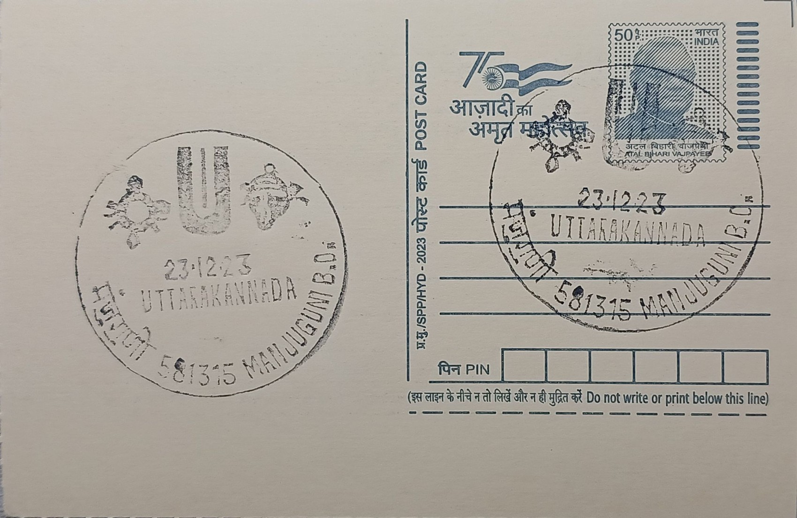

Symbols of Sri Venkataramana Temple
ಶ್ರೀ ವೆಂಕಟರಮಣ ದೇವಸ್ಥಾನದ ಚಿಹ್ನೆಗಳು


The Sri Venkataramana Temple at Manjuguni, a village near Sirsi in Uttara Kannada district, is popularly referred to as the "Tirupati of Karnataka" owing to its enshrined form of Lord Venkataramana, worshipped alongside Goddess Padmavathi. Tradition associates the temple's establishment with Sri Tirumala Yogi, a saint credited in the Sri Venkatesha Mahatmya with installing the deity at this site, situating the shrine within the broader narrative of Venkateswara worship spreading outward from the Tirumala hills into Karnataka's interior and coastal tracts. The symbols central to the temple's identity, the conch, discus, and Vaishnavite tilak, mirror the iconographic grammar used at the parent shrine, reinforcing the pilgrimage link devotees perceive between Manjuguni and Andhra Pradesh's more famous hill temple.
As a Madhva-tradition Vaishnavite shrine, the temple occupies a notable place in Uttara Kannada's religious geography, drawing pilgrims from across the district and beyond for both routine worship and major festivals. Its historical standing is attested in the Tirtha Prabandha, a sixteenth-century composition by the Madhva saint Vadiraja Tirtha, which records the shrine among the sacred sites of the region, indicating that Manjuguni was already an established centre of devotion by that period. The temple is also noted to have received patronage and donations from rulers of the Vijayanagara empire, linking its growth to the broader royal and mercantile support that sustained Vaishnavite institutions across South Kanara and the adjoining Western Ghats region during that era.
Architecturally, the temple follows the classic Vijayanagara idiom, with an expansive and imposing complex that unfolds in a sequence familiar to South Indian temple architecture. Devotees first pass the tall Dwaja Sthambha, the ceremonial flagstaff marking the temple's sacred precinct, and the adjacent Bali Peetha, before proceeding through a richly carved facade into the Navaranga hall, a pillared gathering space leading to the Sukhanasi antechamber and finally the sanctum sanctorum housing the main deity. This layered progression from outer court to inner shrine, typical of temples built or expanded under Vijayanagara patronage, reflects both the ritual choreography of daily worship and the scale of resources historically invested in the site's construction and upkeep.
A distinguishing feature of the Manjuguni temple is its annual Rathothsava, or chariot festival, which draws large numbers of pilgrims from across Karnataka and neighbouring states to witness the procession of the deities through the temple precincts. The festival functions as the ritual high point of the temple's calendar, during which the symbolic elements associated with Venkataramana, the conch, discus, and tilak markings rendered on the processional image, are displayed most prominently to the assembled devotees, reaffirming the shrine's identity within the wider network of Venkateswara temples along the coastal and Western Ghats corridor of Karnataka.
The temple continues to function as an active centre of worship administered through local trustees and priestly families who conduct its daily rituals and oversee the annual festival calendar, a pattern common to historic Vaishnavite shrines in the Sirsi region that still rely on community and pilgrim support rather than large state endowments. Its inclusion on regional pilgrimage circuits connecting Sirsi, Gokarna, and other Uttara Kannada shrines has kept Manjuguni on the itinerary of devotees travelling through the district's temple towns. The postal pictorial cancellation issued for Manjuguni BO, carrying the temple's associated symbols, extends this local recognition into philatelic record, giving collectors a documented marker of a shrine that otherwise remains known chiefly through regional pilgrimage rather than national prominence.
| Date of Introduction | December 17, 2017 |
|---|---|
| Address | Branch Postmaster, |
| Manjuguni BO, | |
| Uttara Kannada (dt.), Karnataka - 581315. |